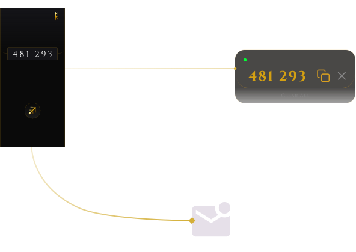

The void carries the message.
Rune intercepts OTP codes on Android and delivers them
silently to macOS or your inbox.
Private, local, and without lifting a finger.
What Huginn intercepts, Muninn receives.
Gungnir carries it further.
The relay your two devices never had.
When a verification code arrives on your Android device,
Huginn captures it instantly. If you're at your Mac,
Muninn receives it silently in your menu bar, ready to
copy. If you prefer your inbox, Gungnir delivers it there
instead.
No typing. No switching screens. No interruption.
Everything is encrypted in transit with TLS and
authenticated on every request. The path between Huginn
and Muninn runs directly over your local network -
private and fast. When you're away from Wi-Fi,
ngrok provides a secure tunnel so Muninn still receives.
Gungnir adds another dimension: if you prefer email delivery,
Gungnir carries the code - sealed in transit, nothing compromised.

"Both apps must remain ultra-lightweight, invisible by default,
- Rune design specification
and zero overhead at idle. No polling loops. No persistent UI.
No unnecessary memory allocation."
Huginn wakes, acts, and terminates. Every execution block is bounded in time. The OS reclaims everything the moment it's done.
If it isn't running, it isn't costing you anything.
Muninn idles in a kernel wait state at 0.0% CPU. CFRunLoop sleeps at the kernel level until a connection arrives - then it wakes.
Presence without consumption.
TLS on every path. Certificate pinning on the local route. Bearer token authentication on every request.
Trust is earned at every step, not assumed at any.
Local Wi-Fi via Bonjour is the primary path. When you step away, ngrok provides a secure tunnel automatically.
Connectivity is not a condition, it's a guarantee.
Watches for incoming OTP codes via SMS and clipboard. When a code arrives, it wakes, captures it, and forwards it instantly - then disappears.
Zero idle CPU, no persistent background process.
Android · KotlinA dock-less menu bar utility. Runs a native TLS server, receives codes from Huginn, and displays them in a minimal popover - ready to copy with one click.
At idle, it waits silently - consuming near zero memory.
macOS · SwiftThe email delivery arm of Rune. When you prefer your codes in your inbox, Huginn routes them through Gungnir instead.
No UI. No overhead. Just the code, in your inbox.
Node.js · RenderGungnir powers email delivery in the background - no download needed. Just enter your email in Huginn's Settings.